sex height
1 Male 75
2 Male 70
3 Male 68
4 Male 74
5 Male 61
6 Female 652025-10-08
Summarizing complex datasets is crucial in data analysis, allowing us to share insights drawn from the data more effectively.
One common method is to use the average value to summarize a list of numbers.
For instance, a high school’s quality might be represented by the average score in a standardized test.
Sometimes, an additional value, the standard deviation, is added.
So, a report might say the scores were 680 \(\pm\) 50, boiling down a full set of scores to just two numbers.
But is this enough? Are we overlooking crucial information by relying solely on these summaries instead of the complete data?
Our first data visualization building block is learning to summarize lists of numbers or categories.
More often than not, the best way to share or explore these summaries is through data visualization.
The most basic statistical summary of a list of objects or numbers is its distribution.
Once a data has been summarized as a distribution, there are several data visualization techniques to effectively relay this information.
Understanding distributions is therefore essential for creating useful data visualizations.
Note: understanding distributions is also essential for understanding inference and statistical models
Pretend that we have to describe the heights of our classmates to someone that has never seen humans.
We ask students to report their height in inches.
We also ask them to report sex because there are two different height distributions.
sex height
1 Male 75
2 Male 70
3 Male 68
4 Male 74
5 Male 61
6 Female 65One way to convey the heights to ET is to simply send him this list of 1,050 heights.
But there are much more effective ways to convey this information, and understanding the concept of a distribution will be key.
To simplify the explanation, we first focus on male heights.
We examine the female height data later.
The most basic statistical summary of a list of objects or numbers is its distribution.
For example, with categorical data, the distribution simply describes the proportion of each unique category:
Female Male
0.227 0.773 To visualize this we simply use a barplot.
Here is an example with US state regions:
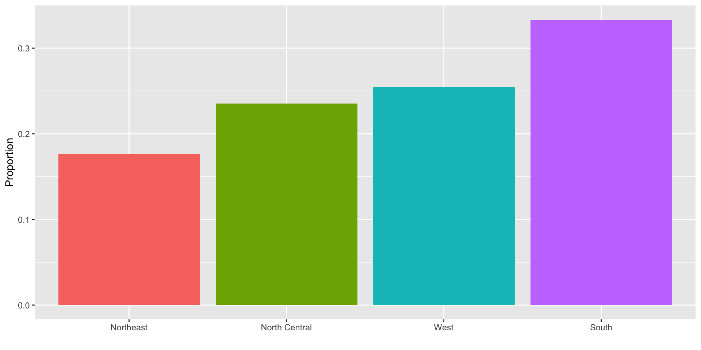
When the data is numerical, the task of displaying distributions is more challenging.
When data is not categorical, reporting the frequency of each entry, as we did for categorical data, is not an effective summary since most entries are unique.
For example, in our case study, while several students reported a height of 68 inches, only one student reported a height of 68.503937007874 inches and only one student reported a height 68.8976377952756 inches.
A more useful way to define a distribution for numeric data is to define a function that reports the proportion of the data below \(a\) for all possible values of \(a\).
This function is called the empirical cumulative distribution function (eCDF), it can be plotted, and it provides a full description of the distribution of our data.
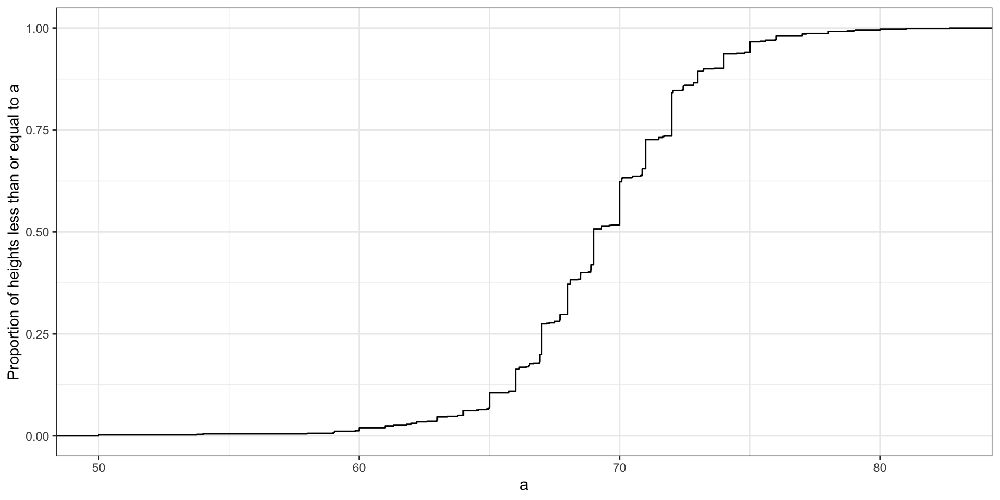
However, summarizing data by plotting the eCDF is actually not very popular in practice.
The main reason is that it does not easily convey characteristics of interest such as: at what value is the distribution centered? Is the distribution symmetric? What ranges contain 95% of the values?
Histograms sacrifice just a bit of information to produce plots that are much easier to interpret.
Here is the histogram for the height data splitting the range of values into one inch intervals: \((49.5, 50.5]\), \((50.5, 51.5]\), \((51.5,52.5]\), \((52.5,53.5]\), \(...\), \((82.5,83.5]\).
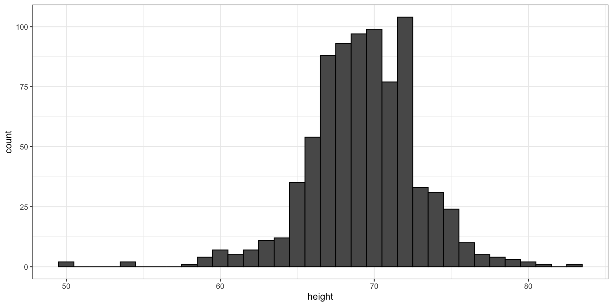
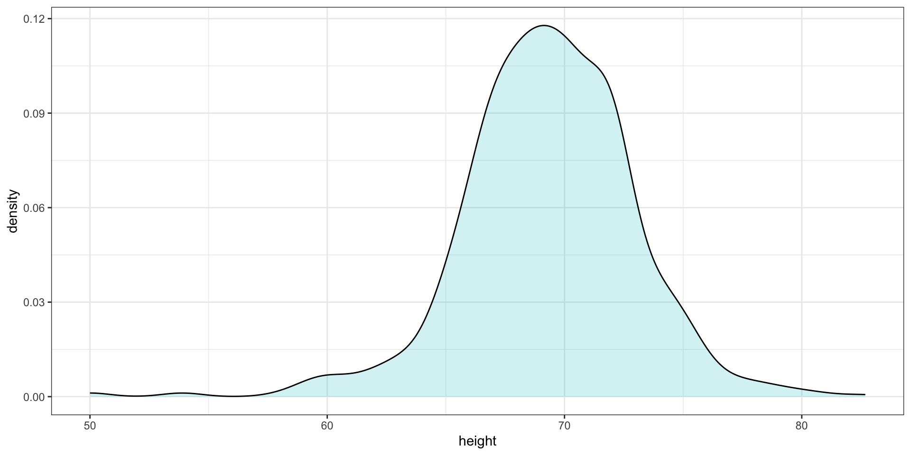
In this plot, we no longer have sharp edges at the interval boundaries and many of the local peaks have been removed.
The scale of the y-axis changed from counts to density. Values shown y-axis are chosen so that the area under the curve adds up to 1.
To fully understand smooth densities, we have to understand estimates, a concept we cover later in the course.
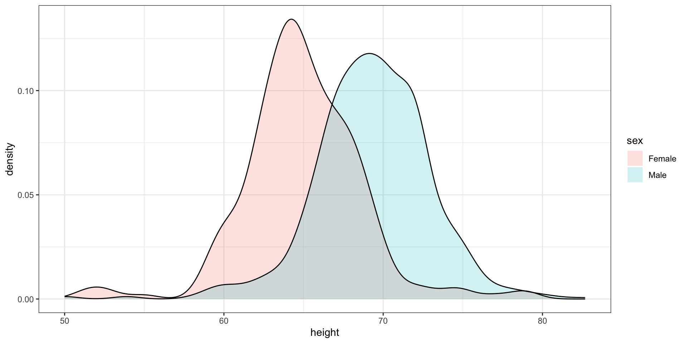
Histograms and density plots provide excellent summaries of a distribution.
But can we summarize even further?
We often see the average and standard deviation used as summary statistics
To understand what these summaries are and why they are so widely used, we need to understand the normal distribution.
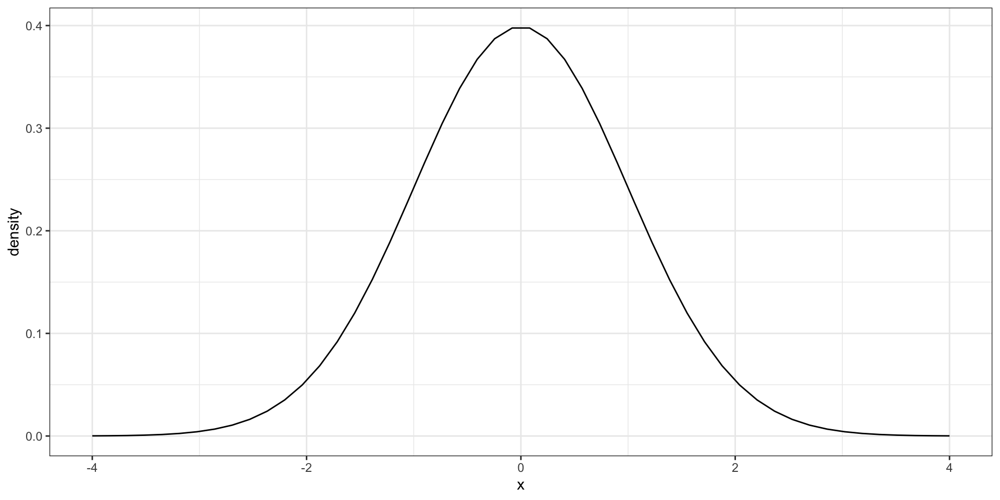
Many datasets can be approximated with normal distributions.
These include gambling winnings, heights, weights, blood pressure, standardized test scores, and experimental measurement errors.
But how can the same distribution approximate datasets with completely different ranges for values?
The normal distribution can be adapted to different datasets by just adjusting two numbers, referred to as the average or mean and the standard deviation (SD).
Because we only need two numbers to adapt the normal distribution to a dataset implies that if our data distribution is approximated by a normal distribution, all the information needed to describe the distribution can be encoded by just two numbers.
A normal distribution with average 0 and SD 1 is referred to as a standard normal.
x: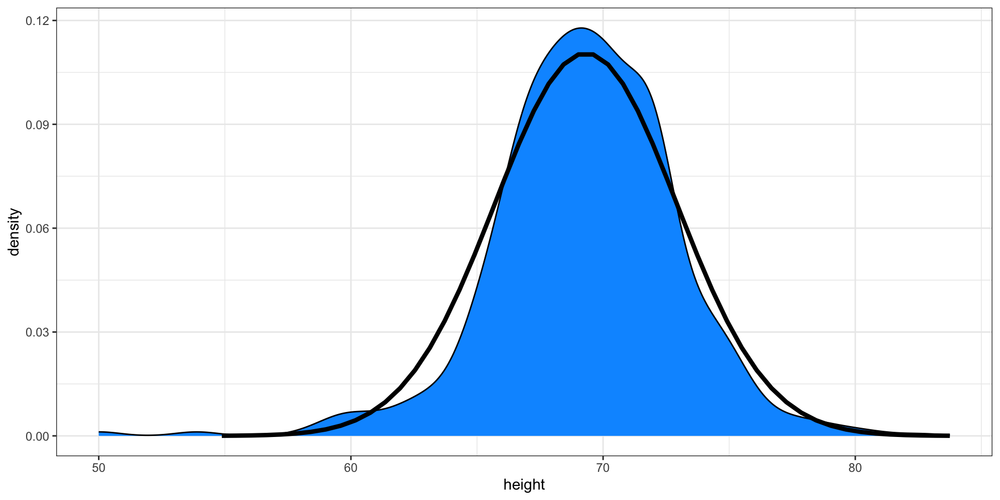
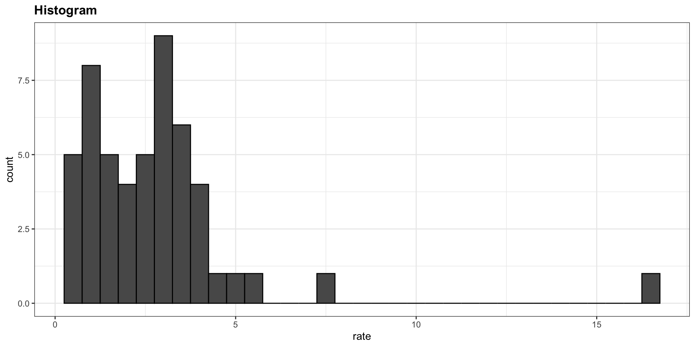
In this case, the histogram above or a smooth density plot would serve as a relatively succinct summary.
But what if we want a more compact numerical summary?
Two summaries will not suffice here because the data is not normal.
The boxplot provides a five-number summary composed of the range (the minimum and maximum) along with the quartiles (the 25th, 50th, and 75th percentiles).
The R implementation of boxplots ignore outliers when computing the range and instead plot these as independent points.
The help file provides a specific definition of outliers.
The boxplot sumarizes with a box with whiskers:
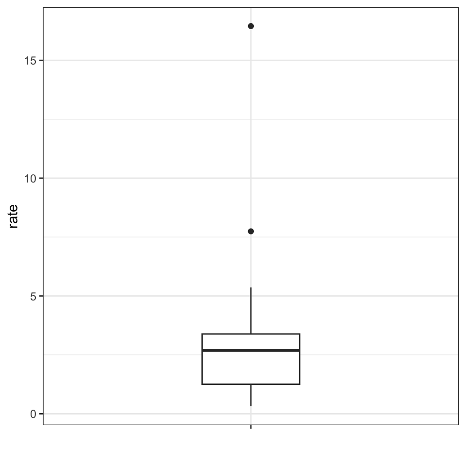
From just this simple plot, we know that:
In data analysis we often divide observations into groups based on the values of one or more variables associated with those observations.
We call this procedure stratification and refer to the resulting groups as strata.
Stratification is common in data visualization because we are often interested in how the distributions of variables differ across different subgroups.
Stratifying and then making boxplot is a common approach to visualizing these differences.
Here are the heights for men and women:
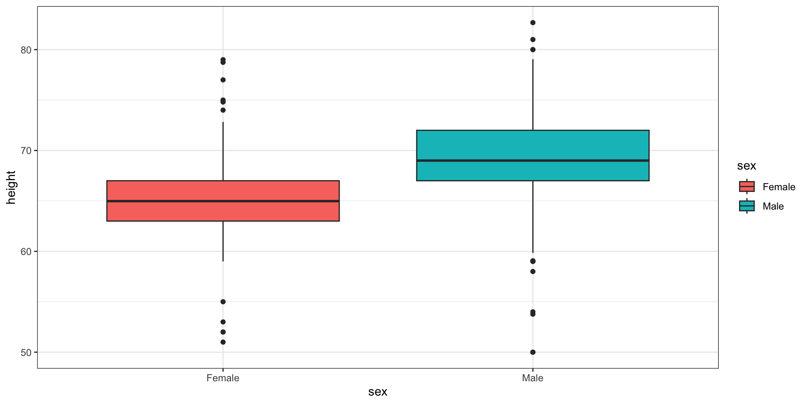
The plot immediately reveals that males are, on average, taller than females.
However, exploratory plots reveal that the approximation is not as useful:
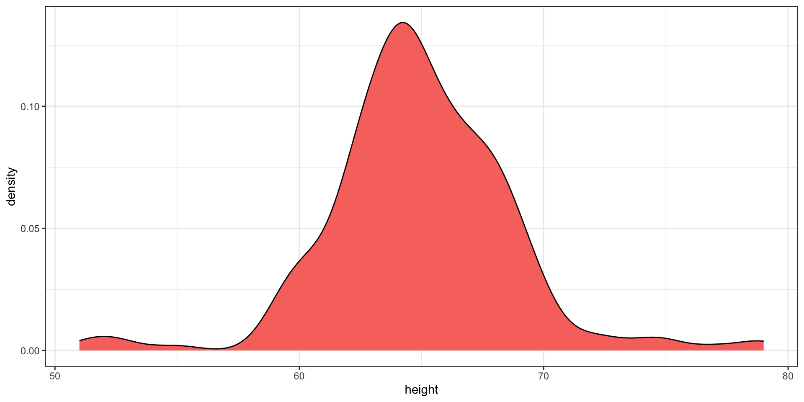
A likely for the second bump is that female as the default in the reporting tool.
The unexpected five smallest values are likely cases of 5'x'' reported as 5x
[1] 51 53 55 52 52